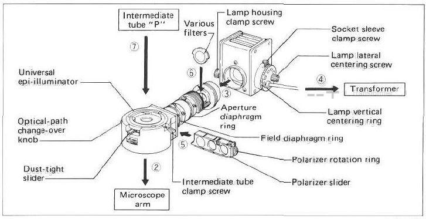
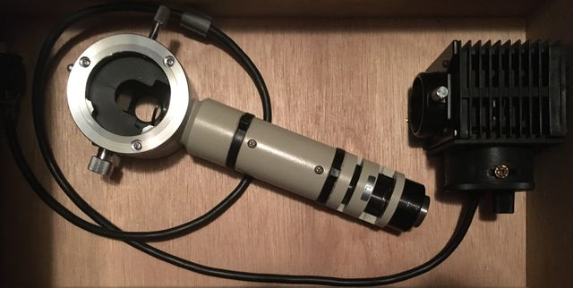

back

Nikon Vertical IlluminatorsThere are at least 6 different EPI illuminators for Optiphot
Nikon Universal EPI Vertical Illuminator (12V)Polarizer can mitigate specular reflections and improve contrast.eBay item number: 234568312474 Seller assumes all responsibility for this listing. Last updated on May 26, 2022 12:37:17 PDT View all revisions Item specifics Condition: Used Brand: Nikon Nikon Universal EPI Vertical Illuminator BF / DF, Polarizer Slider Includes Lamp Housing (No Bulb), For Optiphot + Labophot Microscopes. Tested! **Purchases Include a 14 Day Money Back Guarantee** BestTestUS is a Part of Tech-Systems Electronics, Inc. (Est. 1989)
PreparationLamp centering
Pull D.F. for diascopic
M Plan 6V IlluminatorOptiphot Universal EPI (infinity) illuminator and headAdapts Finite Optiphot and Labophot head flange to infinity heads.
| ||||||||
|
maintained by blekenbleu |